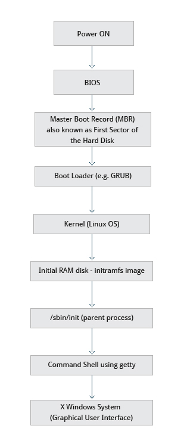

Notes from 'Introduction to Linux' - 21 May, 2015
Tags: linux
Linux Filesystem
- Conventional disk filesystems: ext2, ext3, ext4, XFS, Btrfs, JFS,NTFS, etc.
- Flash storage filesystems: ubifs, JFFS2, YAFFS, etc.
- Database filesystems
- Special purpose filesystems: procfs, sysfs, tmpfs, debugfs, etc.
- Windows
- Partition: Disk1
- Filesystem type: NTFS/FAT32
- Mounting Parameters: DriveLetter
- Base Folder of OS: C drive
- Linux
- Partition: /dev/sda1
- Filesystem type: EXT3/EXT4/XFS
- Mounting Parameters: MountPoint
- Base Folder of OS: /
The Filesystem Hierarchy Standard

The Boot Process

Choosing a Linux Distribution